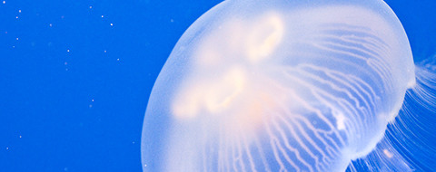
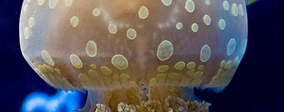
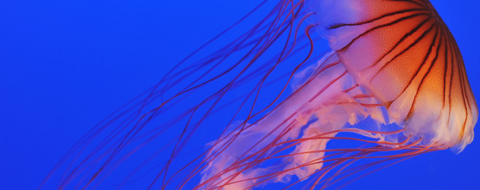
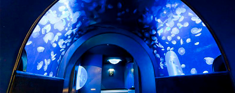
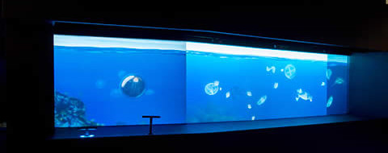
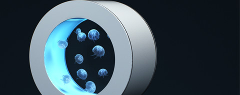

ミズクラゲ
世界中の海に分布しています。
傘の直径は15～30cmで、別名をヨツメクラゲとも言います。

タコクラゲ
関東以南に分布しています。
傘の直径は10～20cmで、傘に水玉模様があるのが特徴です。

アカクラゲ
北海道以南に生息している種類です。
傘の直径は約20cmで、傘に放射状の赤い縞模様が入っているのが特徴です。
オキクラゲ
黒潮海流域二生息しています。
傘の直径は5～7cmで、日本には黒潮に乗ってやってきます

くらげ万華鏡トンネル
全長50メートルのスロープに、色鮮やかな照明に照らされた8つのクラゲ水槽を設置し、壁と天井の3面に約5,000枚の四角形や三角形の鏡を敷き詰めることで、まるでクラゲと一緒に鏡の中の世界を漂っているような浮遊体験ができる。
すみだ水族館 http://www.sumida-aquarium.com/

くらげライフ
約10種類のクラゲの展示により、クラゲの魅力あふれる生態や多様性を紹介すると共に、最新のデジタル映像技術でクラゲの不思議な生活史を再現するコーナーを開設し、より楽しく、わかりやすく学ぶことができる参加体験型の展示施設。
鴨川シーワールド http://www.kamogawa-seaworld.jp/

クラゲは魚のように泳ぐ能力があまりなく、潮の流れに乗って移動しています。そのため流れのない水槽に入れてしまうと傘の開閉で動ける範囲に限られて底の方から動けなくなってしまいます。そこで丸い形をしたクラゲ専用の水槽が販売されるようになり、ろ過装置の水流によって自然な流れを実現しました。ただし、専用水槽はかなり高額なためこれからクラゲ飼育を始める方にとっては少しハードルが高いでしょう。
そういった際には水槽の奥行きとマッチする薄いアクリル板を円を描くように曲げて水槽に設置してみましょう。
外部フィルターが作る水流をうまく利用すればクラゲに最適な水流を作ることができますし、アクリル板の外側にヒーターやフィルターの吸い込みがくるようにするとクラゲが傷つく心配はありません。
餌に関しては行き餌を好む傾向にあるためブラインシュリンプを沸かしてスポイトでクラゲの傘に吹きかけてあげるように与えます。
クラゲは水質悪化にも極端に敏感なため最低でも3日に一度は3分の1ほどの水量を換水するようにしてください。
| エチゼンクラゲ | 傘が2メートルにもなく大型で、名前の由来になっている「越前」の福井県だけではなく、日本海沿岸全域で収穫されます。 |
| ビゼンクラゲ | 傘が50センチ～1メートルほどで、やはりその名の通り「備前」岡山県が名産地 です。 エチゼンクラゲよりも品質が高いと評価されています。 |
| ミズクラゲ | 弱い毒性があり食べてはいけません。 |
| タコクラゲ | 弱い毒性があり食べてはいけません。 |
| アカクラゲ | 強い毒性があり食べてはいけません。触る事も危険です。 |
| オキクラゲ | 強い毒性があり食べてはいけません。触る事も危険です。 |
主に、上記２種類（エチゼンクラゲ・ビゼンクラゲ）が代表的な食用クラゲです。
乾燥させた食材が、一般に中華風和えものなどに使われています。